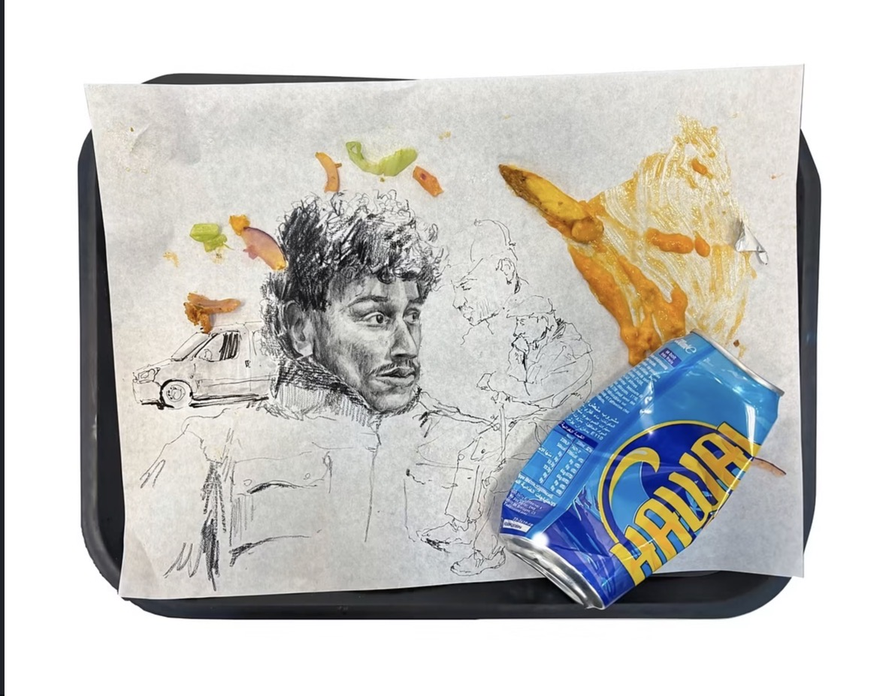

FOOD ART
Fast foodart
Paris, 19ème
Crayon, frites, stylo, sauce algérienne sur plateau

FOOD ART
PAYSAGE
NOTRE REGARD
Quand la nourriture à un goût d'art
À OBSERVER
Observez les textures, les couleurs et les gestes qui animent chaque œuvre. Comparez les matières, les rythmes et le rapport au lieu : chaque pièce invite à ralentir le regard.